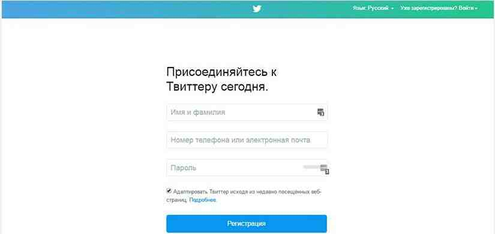

Всё о Twitter
Twitter определение
Тройка лидеров и пять популярных событий
Шесть причин для ретвита и основные факты
История
Устройство
Особенности
Как пользоваться
Правила твиттера
Возможности
Фотографии
Словарь
Карта сайта
Об авторе
Регистрация
- 1 шаг. Заходим на сайт twitter.com , вводим имя, адрес электронной почты или телефон, придумаем пароль и нажимаем «Регистрация». Далее нам предлагают придумать Имя пользователя и Подтвердить номер телефона.
- 2 шаг. После регистрации откроется окно для уточнения ваших интересов. Выберите интересные темы для чтения. После того как вы выбрали допустим спорт и новости, в вашей новостной ленте будут отображаться твиты именно этих тематик.
- 3 шаг. Оживите свой аккаунт. Загружайте фото и устанавливайте шапку на фон. Теперь разберемся как опубликовать первый твит.
